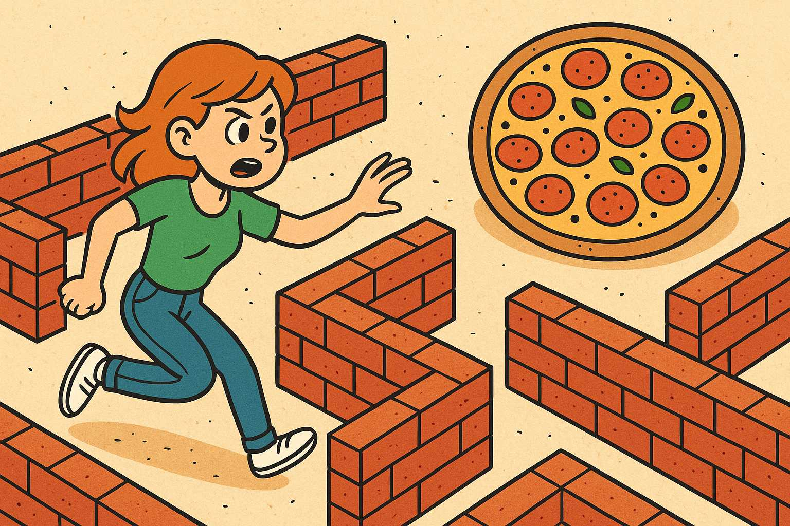

There’s a city-wide blackout, and the automatic doors of the local supermarket just opened for a limited time. Julie Tribbiani is on a mission: rescue the last pizza before it’s gone forever.
But there’s a catch — the supermarket has turned into a maze of toppled shelves and blocked aisles, and Julie’s sense of direction isn’t exactly award-winning. Starting from his current position, he needs to figure out if he can navigate through the maze to reach the pizza.
The layout of the supermarket is given as a 2D grid:
Julie can move up, down, left, or right — but not diagonally (he’s wearing flip-flops, after all).
For each supermarket layout, determine whether there exists a valid path from Julie to the pizza, using only walkable cells ('.').
The first line contains an integer N (1 ≤ N ≤ 20) — the number of test cases.
Each test case consists of:
R and C (1 ≤ R, C ≤ 100) — the number of rows and columns in the grid.
R lines, each with C characters representing the map.
There will always be exactly one 'J' and one 'P' in each map.
Print N lines — one per test case. For each, print:
yes, if Julie can reach the pizza
no, if there's no path to it
2 5 10 ..#....... ###...#... ..#...#.PS .J#...#### ......#... 4 4 J..# ..#. .#.. #..P
yes no
On the first case Julie can reach all the positions in green, which include reaching the pizza (hence, the answer is "yes"):
..#....... ###...#... ..#...#..P .J#...#### ......#...On the second case Julie can reach all the positions in green, but has no way to reach the pizza (hence, the answer is "no"):
J..# ..#. .#.. #..P
Há um apagão geral na cidade, e as portas automáticas do supermercado local abriram por tempo limitado. Julie Tribbiani está em uma missão: resgatar a última pizza antes que ela desapareça para sempre.
Mas há um problema — o supermercado virou um labirinto de prateleiras tombadas e corredores bloqueados, e o senso de direção da Julie não é dos melhores. Partindo da sua posição atual, ela precisa descobrir se consegue navegar pelo labirinto até chegar à pizza.
A planta do supermercado é representada por uma grelha 2D:
Julie pode mover-se para cima, baixo, esquerda ou direita — mas não na diagonal (afinal, ela está de chinelos).
Para cada planta do supermercado, determine se existe um caminho válido de Julie até a pizza, usando apenas células caminháveis ('.').
A primeira linha contém um inteiro N (1 ≤ N ≤ 20) — o número de casos de teste.
Cada caso de teste consiste em:
R e C (1 ≤ R, C ≤ 100) — o número de linhas e colunas da grelha.
R linhas, cada uma com C caracteres representando o mapa.
Haverá sempre exatamente um 'J' e um 'P' em cada mapa.
Imprima N linhas — uma por caso de teste. Para cada uma, imprima:
yes, se Julie consegue alcançar a pizza
no, se não há caminho até ela
2 5 10 ..#....... ###...#... ..#...#.PS .J#...#### ......#... 4 4 J..# ..#. .#.. #..P
yes no
No primeiro caso, Julie consegue alcançar todas as posições em verde, incluindo a pizza (portanto, a resposta é "yes"):
..#....... ###...#... ..#...#..P .J#...#### ......#...
No segundo caso, Julie consegue alcançar todas as posições em verde, mas não tem como chegar até a pizza (portanto, a resposta é "no"):
J..# ..#. .#.. #..P
Content by Fernando Silva and Vanessa Silva (DCC/FCUP), copied from the original website.